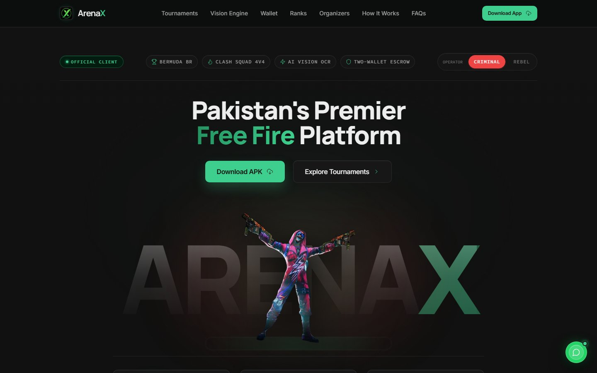
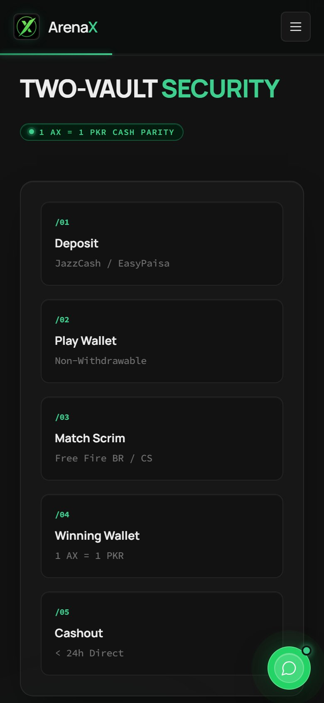
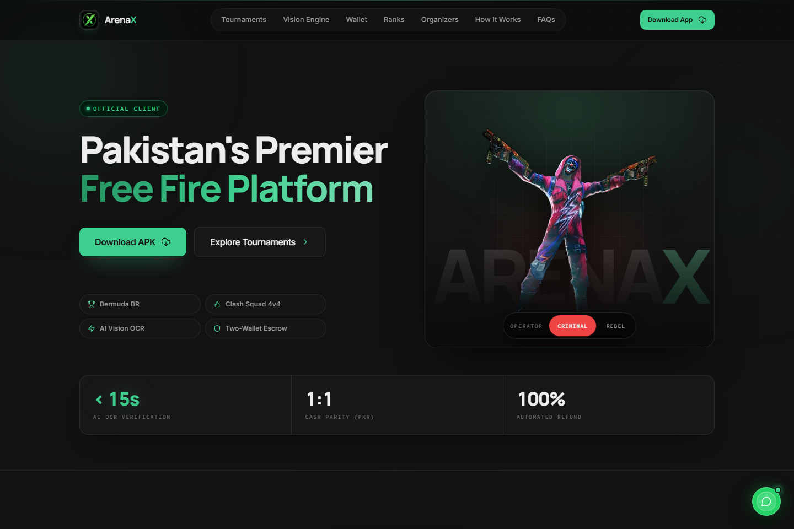
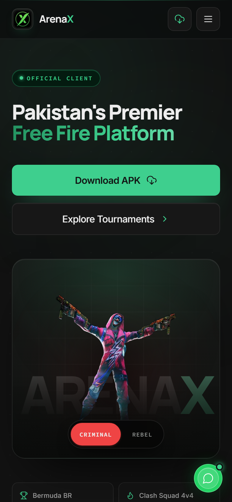
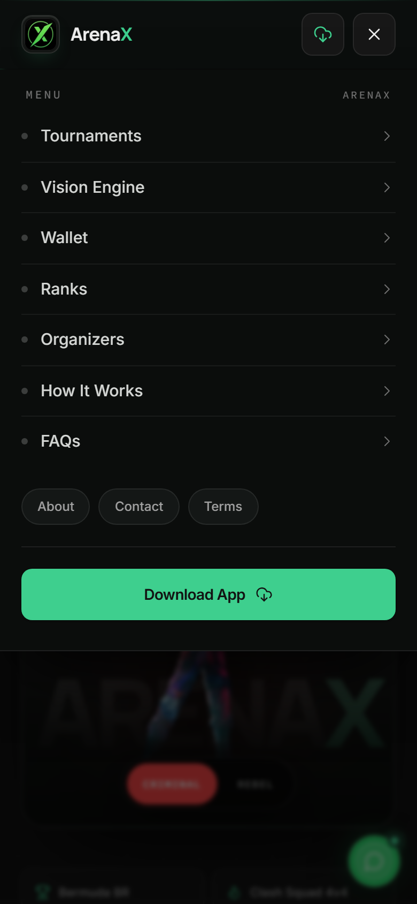
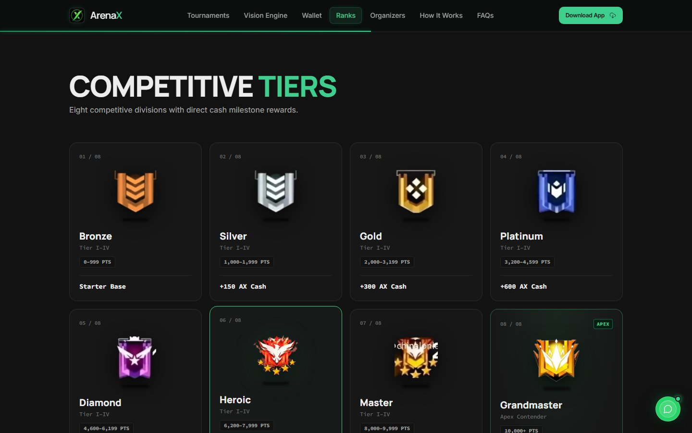
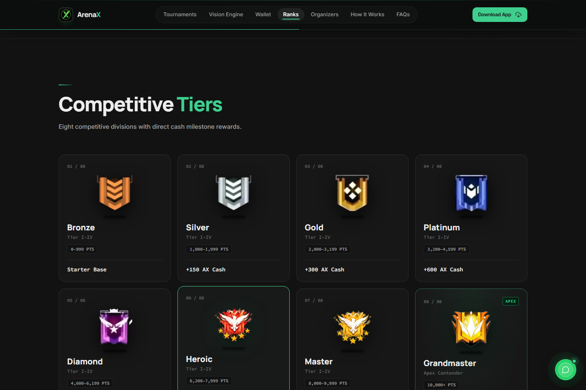

A presentation-only upgrade of the ArenaX marketing site: one typographic system, one carbon surface language, a recomposed hero, a rebuilt navigation and footer, and a mobile experience engineered from 320 px upward. All product copy, pricing, legal text and calculator logic remain exactly as they were.
The site had strong raw material — real product features, a distinctive dark palette and a recognisable emerald accent — but it read as twelve separately designed sections. The upgrade gives it a single editorial voice and fixes the mobile layouts where the previous composition broke down.
One accent. One carbon ramp. One type scale. If a visual element does not help the reader decide, compare or act, it was removed.
Every section was captured at 1440, 1280, 1024, 834, 768, 390, 360 and 320 px before any change. The issues clustered into five groups.
| Area | Finding | Impact |
|---|---|---|
| Header system | Five competing header treatments: 60 px ALL-CAPS, 76 px sentence case, floating icon orb, right-side badge, no support copy. | The page felt assembled from different templates. |
| Typography | Five font families declared; three Google families loaded over the network and self-hosted fallbacks shipped. | Unpredictable rendering and a render-blocking request. |
| Accent | Emerald on headlines, borders, glows, badges, icons and values simultaneously. | Nothing looked important; the CTA lost priority. |
| Hero | Badge row + four chips + operator switch + headline + two CTAs + wordmark + character + three stat cards in 1,144 px. | No single focal point; character buried. |
| Mobile nav | No download action; translucent drawer let hero copy ghost through labels. | Menu felt unfinished and hard to read. |
| Wallet | Five vertical 190 px cards for five short labels. | ~600 px of scroll for 20 words. |
| Ranks | Horizontal strip with no snap, second card half-cut, 10–11 px copy. | Carousel felt accidental. |
| Tabs | “Clash Squad 4v4” wrapped to two lines inside the segmented control. | Control heights became uneven. |
| Footer | Empty brand column; mobile wordmark collided with copyright; 32 px link targets. | Weak close to the page. |
| Assets | Mojibake in 12 files; “chinatown” watermark on the Master badge; 65.5 kB logo shown at 30 px. | Visible corruption on production pages. |


“Broadcast editorial” — the restraint of a developer product site, with the hierarchy of a sports broadcast package. One accent, one carbon ramp, one type scale, one card language.
| Manrope | Display, 500–800 |
| Inter | Body/UI, 400–600 |
| Source Code Pro | Telemetry, 400–600 |
| Hero | clamp(2.15rem, 5.2vw, 4.2rem) |
| Section | clamp(1.95rem, 3.5vw, 3.05rem) |
| Page | clamp(2.25rem, 4.6vw, 3.75rem) |
All three families are self-hosted as Latin-subset WOFF2 via @fontsource. The Google Fonts link was removed.
| Canvas | #121212 |
| Card | #171717 |
| Raised | #1E201F |
| Footer | #161616 |
| Accent | #3ECF8E (hover #34B27B) |
| Hairline | rgba(255,255,255,0.08) |
Radius scale is 10 px (controls), 12 px (inset), 18 px (panels/pillows), with a single inner top highlight.
SectionHeader hero-title section-title page-title body-copy eyebrow panel panel-accent hero-stage stage-grid snap-track
SectionHeader accepts a title, optional description, optional aside badge/action and an
optional centre alignment. It is now used by App Showcase, Tournament Modes, Vision Engine, Wallet,
Ranks, Organizer Program, How It Works, Comparison, Scout Rewards and Download — ten sections with
identical words and identical rhythm.
Sections use clamp(64px, 8vw, 112px) vertical padding and a 1,200 px max-width container with 20 px mobile gutters. Every title sits above a 34 px emerald rule and below a consistent 40–56 px gap.
At ≥1024 px the hero is a two-column editorial layout: brand badge, headline and CTAs on the left; a framed character stage on the right; a single three-up telemetry ribbon underneath.
On phones the reading order is badge → headline → CTAs → character stage → feature chips → telemetry. The product visual is now visible in the first scroll instead of being buried after a wall of chips.
Desktop hero height: 1,144 px → 854 px (−25%).



The mobile pass was not a single breakpoint fix: each section was re-laid-out for the width at which it actually breaks.
| Section | Phone behaviour | Tablet behaviour |
|---|---|---|
| Hero | Message-first stack; 2×2 chips; 3-up telemetry | Single column with 400 px stage |
| App showcase | Phone + screen switcher first, chapters second | Single column, 320 px phone |
| Tournaments | Nowrap 10 px tabs; card header stays on one line | Single column, full-width card |
| Wallet | Five compact connector rows; vault cards full width | 2-column flow; vault cards full width |
| Ranks | Snap carousel, 200 px cards with peek | 2/4-up grid |
| Scout | Cards stacked, 3 stat tiles preserved | Cards stacked until 1024 px |
| Footer | 2-column nav + legal; full-width channels | 4-column grid |
| Viewport | Overflow | Page height | Notes |
|---|---|---|---|
| 320 × 568 | None | 19,511 px | Smallest supported phone |
| 360 × 740 | None | 18,541 px | Android baseline |
| 390 × 844 | None | 17,906 px | iPhone 14 |
| 768 × 1024 | None | 16,390 px | Tablet |
| 1024 × 768 | None | 14,109 px | Two-column hero begins |
| 1280 × 800 | None | 14,570 px | Laptop |
| 1440 × 900 | None | 15,012 px | Reference desktop |
| 1920 × 1080 | None | 15,289 px | Container capped at 1,200 px |
Master rank badge. The shipped file contained a baked-in “chinatown” watermark and white scribbles. It was replaced with a clean, transparent gold phoenix emblem generated from the higher-resolution Heroic artwork, so the 80 px medal reads correctly.
Logo. The 1,024 px WebP was resized to 128 px for its 30–34 px display size: 65.5 kB → 4.65 kB (−93%) with no visible difference.
Punctuation. UTF-8 mojibake was repaired across twelve components. The table below shows the corrupted byte sequence on the left and the character the copy was always meant to contain on the right.
| Corrupted bytes | Restored | Character |
|---|---|---|
– | – | En dash |
• | • | Bullet |
★ | ★ | Star |
Every marketing string, legal clause, calculator label and route label is unchanged. The preservation tests from the original project still pass, and the only text edits were the punctuation repairs above — restoring the characters the copy was always meant to contain.
No headline, CTA, price, reward, FAQ answer, legal clause, footer link, analytics event or APK URL was rewritten, reordered or removed.


| Check | Result | Detail |
|---|---|---|
| TypeScript | PASS | Strict mode, 0 errors |
| ESLint | PASS | 0 errors, 0 warnings |
| Production build | PASS | Vite 8, 3.59 s |
| Automated tests | 546 / 546 | 134 suites, 0 failures |
| Responsive audit | PASS | No horizontal overflow at 8 viewports |
| JavaScript | 584.10 kB / 168.17 kB gzip |
| CSS | 86.83 kB / 14.63 kB gzip |
| Logo | 4.65 kB (was 65.5 kB) |
| Fonts | 10 Latin-subset WOFF2, self-hosted |
| External font requests | 0 |
aria-expanded, aria-controls, aria-modal, aria-current, aria-pressed.#707070 to ~#8A8F8B on 11–12 px labels for AA.srcset) for the hero character and rank badges.The implementation is complete in the workspace, the production build is current, and this report is accompanied by before/after captures in report-assets/.